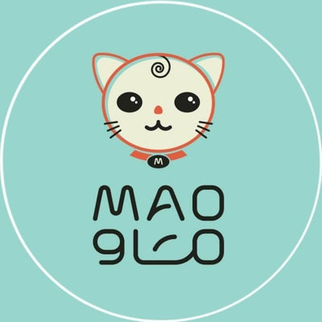
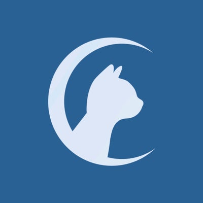
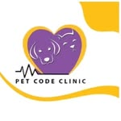

معرض صفحات الهبوط
كل نموذج هنا صُمم كنقطة بداية عملية لهوية رقمية أسرع، أوضح، وأسهل في التواصل.

نموذج متاح
عيادة ماو البيطرية
صفحة عربية متكاملة تعرض الخدمات، التقييم، الموقع، حسابات التواصل وطرق الحجز.
فتح المعاينة ←
نموذج متاح
عيادات سلام للحيوانات الأليفة
صفحة مخصصة بهوية سلام، تعرض الخدمات والموقع والفيديوهات وروابط الحجز والتواصل المباشر.
فتح المعاينة ←
نموذج متاح
بيوت القطط — Cat Houses
تصوّر متكامل يعيد تقديم العيادة والفروع والخدمة البيطرية المتنقلة، مع روابط المواقع وفيديوهات الحساب والتواصل المباشر.
فتح المعاينة ←
نموذج متاح
عيادة مزايا البيطرية
صفحة جريئة تبرز المواعيد المسائية وعروض التطعيم والتعقيم، مع الموقع والتقييم والتواصل المباشر عبر واتساب.
فتح المعاينة ←
نموذج متاح
عيادة رمز أليف البيطرية
صفحة بهوية العيادة الحقيقية تعرض الرعاية والعلاج والتطعيمات والعناية، مع فيديوهات الحساب والموقع والتواصل المباشر.
فتح المعاينة ←